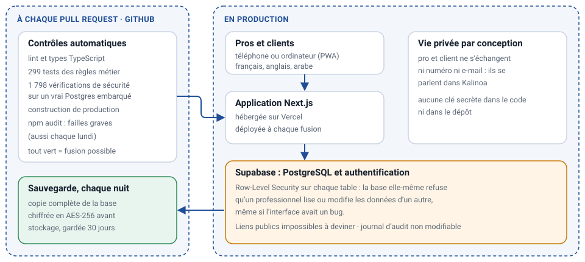
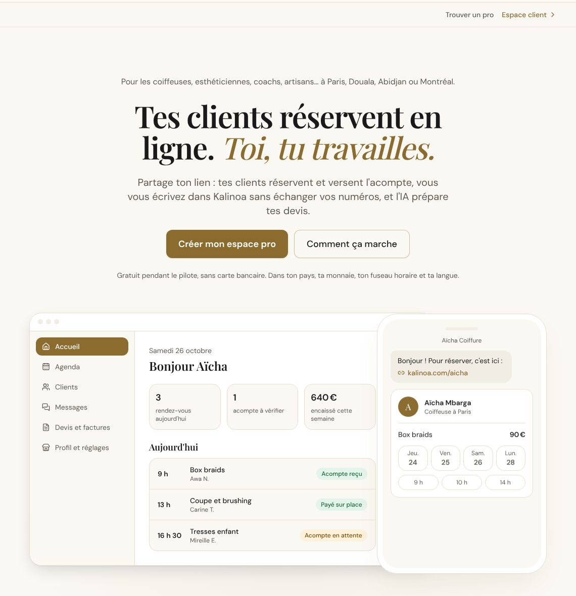
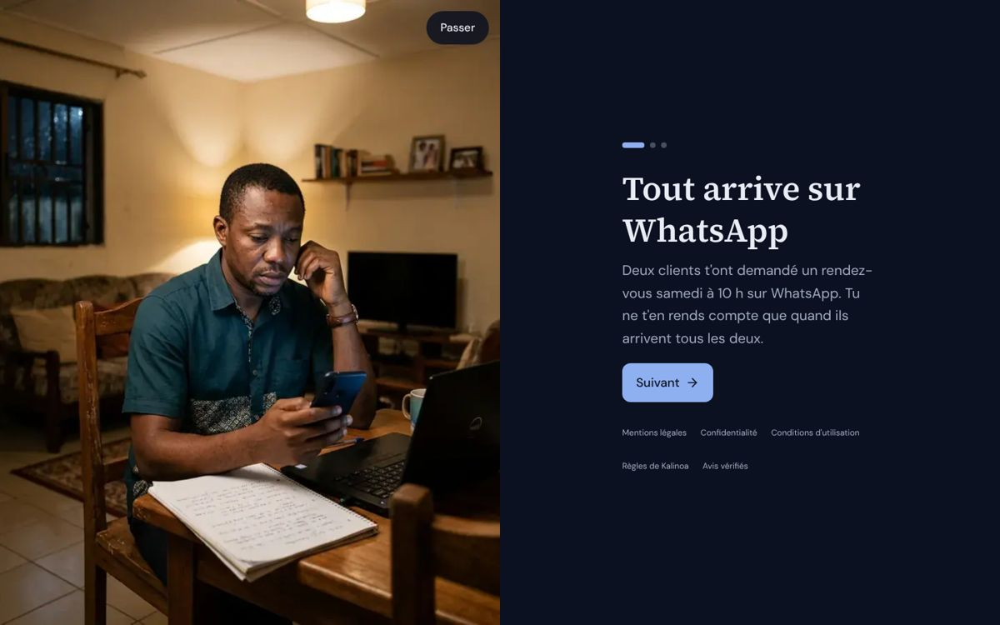
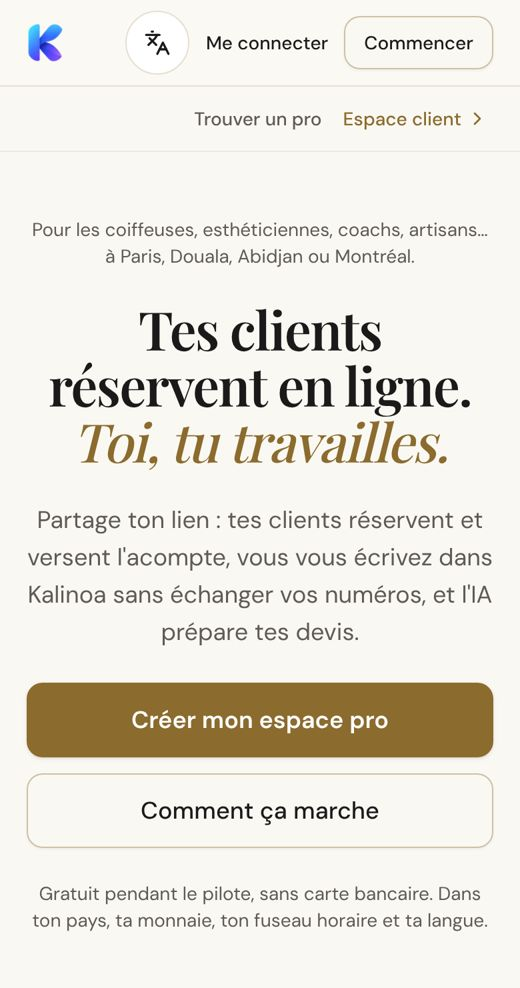

Étude de cas · sécurité des données et DevSecOps
Kalinoa
Une application de rendez-vous, de devis et de paiements pour les indépendants, où c’est la base de données elle-même qui empêche un professionnel de voir les clients d’un autre. Chaque règle est vérifiée par des tests, à chaque modification.
- 1 798vérifications de sécurité de la base, à chaque modification
- 299tests des règles métier
- 116migrations SQL versionnées
- Chaque nuitune sauvegarde chiffrée en AES-256, 30 jours gardés
Situation
Les coiffeuses, coachs ou artisans indépendants gèrent leurs rendez-vous sur WhatsApp : deux clients au même créneau, des rendez-vous manqués sans acompte, et des numéros personnels qui circulent.
Kalinoa est né d’un projet de cours, que j’ai décidé de transformer en vrai service, ouvert au public.
Tâche
Construire une application où des professionnels confient les données de leurs clients. La protection de ces données ne pouvait pas reposer sur l’interface seule : un professionnel ne doit jamais voir les données d’un autre, même si le code de l’interface a un bug.
Le tout en restant utilisable sur un téléphone Android avec une connexion instable, et dans plusieurs langues.
Actions
- Protéger au niveau de la base. Row-Level Security sur chaque table PostgreSQL : c’est la base qui vérifie, à chaque requête, à qui appartient la donnée. La structure évolue par migrations SQL versionnées, 116 à ce jour.
- Tester la sécurité comme le reste. Chaque nouvelle table arrive avec ses tests. 1 798 vérifications sont rejouées sur un vrai PostgreSQL embarqué qui simule les rôles de Supabase : visiteur anonyme, professionnel, client.
- Contrôler chaque modification. Une pull request par ticket. Avant toute fusion : lint, types, 299 tests des règles métier, tests de sécurité de la base, construction de production. npm audit bloque les failles graves, sur chaque pull request et chaque lundi.
- Limiter ce qui circule. Pro et client ne s’échangent ni numéro ni e-mail : ils se parlent dans Kalinoa. Les liens publics utilisent des identifiants impossibles à deviner. Aucune clé secrète dans le code ni dans le dépôt.
- Pouvoir revenir en arrière. Chaque nuit, une copie complète de la base (rôles, structure, données), chiffrée en AES-256 avant d’être stockée, gardée 30 jours, avec une procédure de restauration écrite. Les actions sensibles sont notées dans un journal d’audit que personne ne peut modifier.
- Documenter les choix. Une fiche par module, et chaque décision structurante consignée avec sa raison : 179 à ce jour.
Résultats
- L’application est en ligne sur kalinoa.com, sur téléphone et ordinateur, en français, en anglais et en arabe.
- Un bug dans l’interface ne suffit pas à exposer les données d’un autre professionnel : la base refuse.
- Aucune modification n’est fusionnée sans que les 1 798 vérifications de sécurité passent.
- Plus de 300 tickets et pull requests, et 179 décisions documentées : le projet peut être repris par quelqu’un d’autre.
Ce que j’en retiens. Une règle de sécurité qu’on n’a pas testée n’est qu’une hypothèse. C’est pour ça qu’aucune table n’arrive dans Kalinoa sans les tests qui prouvent qui peut la lire et la modifier.
Architecture

En images


